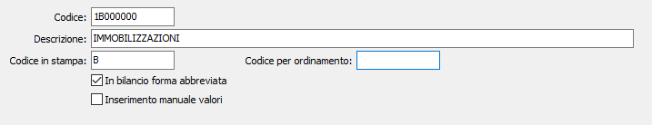

Conti IV Direttiva CEE
La tabella è tipicamente funzionale alla procedura di Contabilità, e riguarda comunque le aziende tenute alla presentazione del bilancio secondo la struttura prevista dalla IV Direttiva CEE. Tuttavia le note operative di questa tabella vengono qui inserite perché funzionali alla creazione di taluni mastri e taluni sottoconti (clienti e fornitori) che vengono utilizzati in tutte le procedure di OS1.
A norma del D.L. 9 aprile 1991 n. 27 sono tenute a presentare il bilancio secondo la forma ordinaria o abbreviata della IV Direttiva CEE le Società di capitali. In particolare, possono utilizzare la forma abbreviata le società che, per due esercizi consecutivi, non abbiano superato due dei seguenti limiti:
totale attivo dello stato patrimoniale: 2 miliardi di lire
ricavi delle vendite e delle prestazioni: 4 miliardi di lire
dipendenti occupati in media durante l'esercizio: 50 unità.
Nel bilancio in forma abbreviata lo Stato Patrimoniale comprende solo le voci contrassegnate con lettere maiuscole e numeri romani, con separata indicazione, per le voci C II dell'attivo e D del passivo, dei debiti e dei crediti esigibili oltre l'esercizio successivo.
Il piano dei conti IV Direttiva CEE viene normalmente inserito in OS1 all'atto dell'installazione, nella formulazione del D.L. 9.4.91 n. 27. Vengono tuttavia illustrate le modalità di manutenzione nell'eventualità che l'utente voglia modificare la struttura prevista dal D.L. citato. Al termine, viene presentato tale piano dei conti. La tabella è accessibile da Archivi, Generali, Conti IV Direttiva CEE.

CODICE: campo alfanumerico contenente il codice del conto appartenente al bilancio riclassificato secondo la IV Direttiva CEE. Deve essere un codice strutturato in base ai seguenti criteri:
1° carattere = identifica la classe (1 per le attività, 2 per le passività, 3 per i conti economici, 5 per i conti d'ordine attivi, 6 per i conti d'ordine passivi);
2° carattere = identifica il gruppo (A -> Z);
3° e 4° carattere = identificano il mastro (00 -> zz);
5° e 6° carattere = identificano il conto (00 -> zz);
7° e 8° carattere = identificano il sottoconto (00 -> zz).
Sul campo è attiva la funzione di ricerca sulla tabella stessa.
DESCRIZIONE: inserire la descrizione del conto, a libera scelta dell'utente.
CODICE IN STAMPA: contiene il codice che si vuole stampare sul bilancio riclassificato. Viene proposta in automatico la parte del codice valida per essere stampata, con la trascodifica, quando prevista, dei mastri in numeri romani.
CODICE PER ORDINAMENTO: Indicare in questo campo il codice da utilizzare per ordinare correttamente secondo la struttura del piano dei conti prevista dalla normativa. L'informazione è opzionale, se non viene specificato nessun valore per l'ordinamento dei dati in stampa verrà utilizzato il codice del conto stesso. Ad esempio se si vuole inserire il nuovo conto "Crediti verso imprese sottoposte al controllo delle controllanti" fra i due conti già esistenti "Crediti verso imprese controllanti" (codice 1C020400) e "Crediti tributari" (codice 1C020500) codificare il nuovo conto con il primo codice libero (nell'esempio 1C020800) ed indicare in questo campo il valore 1C0204AA per posizionare il nuovo codice in fase di stampa fra i due codici esistenti.
IN BILANCIO FORMA ABBREVIATA: indica di stampare comunque il conto, anche nel bilancio in forma abbreviata (casella con segno di spunta).
INSERIMENTO MANUALE VALORE: indica di non conteggiare il valore del conto, ma di segnalarne la presenza, in fase di elaborazione bilancio (casella con segno di spunta).